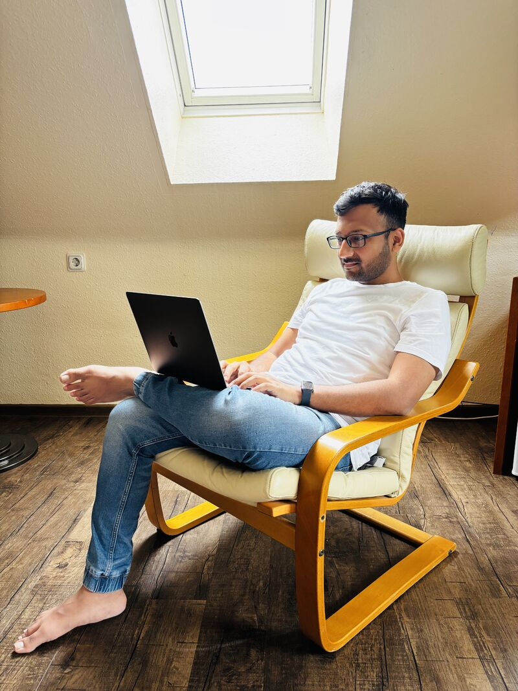

2023 - 2025

MBA (Operations), IGNOU (Grade A).
- Specialized in Operations Management, Strategic Management & Project Management
- Mastered Agile methodologies, Risk Analysis & Management Information Systems
- Developed expertise in building business cases & strategic roadmaps
- Capstone: Operational Risk in Mainframe Modernization (risk framework & practical recommendations)
- Recognition: ANABIN H+ (German-equivalent Masters degree)
